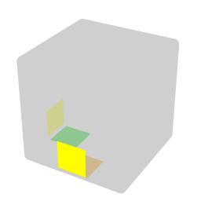
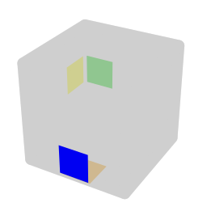

3x3x3目隠し（M2/OP）
ルービックキューブ関連 > 3x3x3目隠し（M2/OP）
書きかけ。
3x3x3目隠し（3BLD）とは、キューブを回さずに状態を記憶し、その後目隠しをして、キューブを揃える競技種目である。 私が使っている解法をまとめる。 M2/OP法。
参考
- 【初級解法】目隠しルービックキューブ解説 - YouTube
- BLD教本2020-1-30
- BLDerによるBLDerのためのツールhinemos
- ユーザー登録すると解説が見られる。
ステッカーの記法
ステッカーの位置を表す記法を導入する。
3BLDでは、一般的に、コーナーやエッジのキューブではなく、そのキューブを構成するステッカーに注目する。 今どきステッカーの貼られたキューブも見なくなったけれど、それでもステッカーと言うらしい。 普通にルービックキューブを揃えるときのLL（ラストレイヤー）では、コーナーやエッジのキューブについて、OLLで向きを揃え、PLLで位置を揃える。 キューブではなくステッカーの位置を揃えると考えると、キューブの位置と向きを合わせて揃えることになる。回転記号と同じ記号で各面を表す。 コーナーキューブとエッジキューブをそのキューブにある面の記号で表す。 例えば、下の図で丸で印を付けたコーナーキューブはURFであり、印を付けたエッジキューブはFRである。 そして、コーナーキューブやエッジキューブの各ステッカーは、そのステッカーの面の記号を先頭に持ってくることで表す。 例えば、コーナーキューブUFRの白色のステッカーはUFRであり、緑色のステッカーはFRUである。 エッジキューブFRの赤色のステッカーはRFである。

揃え方の原理
コーナーもエッジも、バッファと呼ばれる固定の位置にあるステッカーと、他のステッカーを交換する手順を繰り返して揃えていく。
例: D2 R L2 U2 F B' D' R' D2 B R2 L2 B U2 B R2 U2 R2 D2 B Fw Uw
エッジのバッファはDFである。 隠れて見えないが、白いステッカーで、①のURにあるべきステッカーである。 そこで、まずは、DFとURを交換する。 そうすると①にあったステッカーがDFの位置に来る。 このステッカーは②のRBにあるべきなので、次は、DFとRBを交換する。 今②のRBにあるステッカーは③のUBにあるべきなので、DFとUBを交換する。 同様に、DFとULを交換して……と続けていく。
キューブの性質上、コーナーやエッジが1個だけ向きが変わることはないので、バッファのステッカーを同じキューブの別のステッカーを交換する手順は不要である。 結局、コーナーは7×3=21個、エッジは11×2=22個の、合計43個の手順でキューブを揃えることができる。 なお、大半の手順は理屈で考えられ、覚える必要のある手順はもっと少ない。
全ての揃っていないステッカーを辿って、バッファのステッカーになったら終了である。 もし、まだ揃っていないのにバッファのステッカーに当たったら、揃っていない別のステッカーを1個選んで続ける。 このとき、選んだキューブのステッカーは最後にもう一度バッファと交換する。 バッファに（向きが合っていてもいなくても）バッファにあるべきキューブがあれば、上記の場合と同様に揃っていない別のステッカーを選ぶ。 位置は合っているのに向きが違う（コーナーならばCO、エッジならばEOと言う）キューブについては、例えばUFRとFRUのように、同じキューブの2個のステッカーを交換する。
途中でバッファに当たって、揃っていないステッカーを選ぶとき、どのステッカーを選ぶのかを事前にある程度決めておくと楽。 私は、エッジは、UFとDB、UBにあるべきステッカーの今ある位置を優先している。 揃っていない各キューブについては、少なくともどれか1個のステッカーの手順を回すことになるが、これらの位置はもう一方のステッカーの手順が面倒だからである。 UFではなく、UFにあるべきステッカーの今ある位置なのは、最初に選択してしまうと最後にもう一度選択することになり、このときにもう一方の面倒な手順になる可能性があるからである。 コーナーは手順の短い位置を優先している。
全体の流れ
次の順番で進める。
- コーナーの記憶
- エッジの記憶
- エッジを揃える
- （必要ならば）パリティ手順
- コーナーを揃える
文字の割り当て
UFRやUFなどでは記憶がしづらいので、各ステッカーの位置に平仮名を次のように割り当てる。 コーナーとエッジは分けて記憶するので、同じ文字で良い。
交換するとき、一方は必ずバッファなので、交換の相手のステッカーに対応する文字を覚えれば良い。
コーナーの記憶
コーナーは、ループが途切れたり、最初から揃っているステッカーが無ければ、7文字になる。 ループが途切れるごとに+1、最初から揃っているステッカーがあるごとに-1される。 これを、2文字ずつに区切り、2文字ごとにイメージを割り当てる（レターペア）。 「た」と「ぬ」だったら「たぬき」など。 私が使っているレターペアの一覧はこのページの末尾に載せた。
1個のキューブで2文字を使うCOが多いと、記憶しなければいけないイメージが増えて大変。 そこで、COは最後にまとめ、もしCOが多いならば、U面かD面にあるべきステッカーの位置だけを覚える。 もう一方は同じキューブのU面かD面なので、覚える必要が無い。 最後の何文字がCOかということだけを覚えておく。
エッジの記憶
エッジの文字数は、基本が11文字で、コーナーと同様に増減する。
まず、最初の2文字を飛ばして、残りを頭の中で唱えて覚える（音記憶）。 後述するように、奇数文字目か偶数文字目かで使う手順が変わる場合があるので、2文字ずつの区切りを意識する。 言いやすい文字列だと覚えやすいので、「な」行を「ま」行に置き換えたり、濁点や半濁点を付けたりする。 EOもCOと同様に最後にまとめる。 コーナーと異なり、エッジは1個のキューブにステッカーが2個なので、もう一方のステッカーは一意に定まるので、どちらかのステッカーを1文字覚えておくだけでも良い。 個数が多ければ、1文字ずつと、最後の何文字がEOかを覚える。
最初の2文字は、キューブを見ながら「こことここ」のように覚える（ビジュアル記憶）。 覚えるのは、最初の1文字と、そこにあるステッカーの色でも良い。
エッジのビジュアル記憶 → エッジの音記憶 → コーナーのレターペアによる記憶 という順番なのは、この順に記憶から消えやすいからである。
エッジを揃える
エッジは、 M2' で交換を行う。 DFをバッファとし、UBに交換対象のステッカーを移動して M2' で交換する。 M列の他のキューブも移動してしまうので、ステッカーをUBに移動する際には、M列を崩さないようにする必要がある。 また、1回ごとにM列が180度回転することから、UFとDB、FU、BDは、偶数回目のときには180度回転したステッカーの手順に代える。
手順。
| Sticker | Image | Algorithm | Memo |
|---|---|---|---|
| LU | B L' B' M2' B L B' | LB経由。 | |
| LF | B L2 B' M2' B L2 B' | LB経由。 | |
| LD |  | B L B' M2' B L' B' | LB経由。 |
| LB |  | L' B L B' M2' B L' B' L | B の前に L' でLBのステッカーを退避しておく。 |
レターペア
- 「ま」行は「な」行とする（例: ミカン → にか）。
- 濁点と半濁点は清音とする（例: ピエロ → ひえ）。
- 「や」行や「ら」行、「わ」行、長音、拗音と促音の小さい文字は無視する（例: クラリネット → くね、切手 → きて）。
- コーナーで使用しない「あ」と「ち」、「な」は省いている。
| あ | い | う | え | か | き | く | け | さ | し | す | せ | た | ち | つ | て | な | に | ぬ | ね | は | ひ | ふ | へ | ||||||
|---|---|---|---|---|---|---|---|---|---|---|---|---|---|---|---|---|---|---|---|---|---|---|---|---|---|---|---|---|---|
| あ | |||||||||||||||||||||||||||||
| い | 胃 | 淫雨 | 家 | イカ | 息 | イクラ | 池 | 居酒屋 | 石 | 椅子 | 伊勢エビ | 板 | 厳島神社 | 射手座 | 頭文字D | 犬 | 稲 | 位牌 | 居飛車 | イーブイ | イベリコ豚 | ||||||||
| う | ウイスキー | 鵜 | 植木 | 羽化 | 浮き | ウグイス | 受け身 | ウサギ | 牛 | 臼 | 運勢 | 歌 | ウツボ | 雲梯 | ウニ | ウラヌス | 畝 | 乳母車 | 雨氷 | 産毛 | 右辺 | ||||||||
| え | エイ | エウロパ | 円 | 演歌 | 駅 | エクセル | AK47 | 餌 | エッシャー | エスカレーター | エンゼル | 枝 | 閲覧履歴 | エンテイ | エニグマ | M字開脚 | エネル | エヴァンゲリオン | 海老 | FF | エベレスト | ||||||||
| か | 貝 | カウボーイ | カエル | 缶 | 柿 | 角 | 崖 | 傘 | 火事 | ガス | 化石 | 刀 | カツ丼 | 空手 | 蟹 | カヌー | 亀 | カバ | カビルンルン | カブ | 壁 | ||||||||
| き | 機雷 | キウイ | 気円斬 | 金貨 | キキ | キクラゲ | 金蹴り | 喫茶店 | 岸 | キス | キセル | 北 | キツネ | 切手 | 黄身 | キムワイプ | 杵 | 牙 | きびだんご | 切符 | 木べら | ||||||||
| く | 杭 | 空気 | クエーサー | 軍艦巻き | 釘 | 九九 | 矩形 | 草 | 櫛 | くす玉 | クゼ・ヒデオ | 管 | 靴 | ぐでたま | クンニリングス | クヌギダマ | クラリネット | クッパ | 首輪 | クー・フーリン | クレベリン | ||||||||
| け | 毛糸 | 巻雲 | 嫌煙 | 毛皮 | ケーキ | 月9 | 毛 | 袈裟 | ケシ | 懸垂 | 血栓 | 下駄 | ケツだけ星人 | 原点 | ケミカルライト | 毛虫 | ケネディ大統領 | 毛羽立ち | 顕微鏡 | ケフカ | ケルベロス | ||||||||
| さ | サイコロ | サウナ | 冴えカノ | サッカー | 咲 | 柵 | 鮭 | 笹 | 刺身 | 刺股 | 左遷 | サンタ | サツマイモ | 砂鉄 | サニー号 | 侍 | サメ | サバ | 錆 | 座布団 | サーベルタイガー | ||||||||
| し | シイタケ | シュウマイ | シエル先輩 | 鹿 | 指揮者 | シクラメン | 試験管 | シーサー | 獅子 | 雫 | 視線 | 舌 | シーツ | 心電図 | シミ | シムシティ | しめ縄 | 芝生 | 尿瓶 | 新聞 | シベリアンハスキー | ||||||||
| す | スイカ | 数独 | 据え膳 | スカート | スキー | スク水 | スケート | 朱雀 | 寿司 | 煤 | 寸前 | スタバ | スーツケース | ステゴサウルス | 墨 | スヌーピー | 脛 | スパイ | スピーカー | スプーン | 滑り台 | ||||||||
| せ | 精子 | ゼウス | 千円札 | 世界地図 | 席 | セクシー | 石鹸 | セサミストリート | 戦士 | 扇子 | 先生 | セーター | 節分 | セロテープ | セミ | 栓抜き | 洗面器 | セバスチャン | 背びれ | セブンイレブン | 煎餅 | ||||||||
| た | 鯛焼き | 田植え | たえちゃん | 宝箱 | 滝 | 沢庵 | 竹 | ターザン | 端子 | 箪笥 | 打席 | タン | タツノオトシゴ | 盾 | 谷 | タヌキ | 種 | タバコ | 足袋 | タブレット | たべっ子どうぶつ | ||||||||
| ち | |||||||||||||||||||||||||||||
| つ | 通知 | 杖 | 柄 | 月 | ツクシ | 漬物 | ツーサイドアップ | 対馬 | ツーステップ | 釣り銭 | 蔦 | 筒 | ツンデレ | 積み木 | ツムツム | 爪 | ツバメ | 吊り紐 | 粒 | ツベ（YouTube） | |||||||||
| て | 低気圧 | 蝶々 | 田園 | 手鏡 | 電気 | 天狗 | 電源ユニット | 手提げ袋 | 手品 | デスノート | 電線 | 電卓 | 鉄棒 | 手 | テニス | 手ぬぐい | 出目金 | 手羽先 | 天秤 | 手袋 | デベソ | ||||||||
| な | |||||||||||||||||||||||||||||
| に | 新潟県 | ミュウ | 贄 | ミカン | ニキビ | 肉 | 三毛猫 | 二酸化炭素 | 虹 | ニス | 店 | 煮卵 | 密 | 任天堂 | 耳 | ニムト | 峰 | ニッパー | 鈍色 | 妊婦 | ニベア | ||||||||
| ぬ | ぬいぐるみ | ヌゥ | ムエタイ | 糠漬け | ムキムキ | ムンクの叫び | 抜け毛 | ムササビ | 虫 | ムスカ | 無線 | 六太 | ムツゴロウ | 無敵状態 | ムニエル | 無 | 胸 | ムハンマド | ムヒ | ヌーブラ | ぬ～べ～ | ||||||||
| ね | メイちゃん | ネウロイ | 姉さん | メガネ | メッキ | ネクタイ | ねりけし | ネザー | ネッシー | ネス | 目線 | Meta | 熱さまシート | メテオ | メニュー | NEM | 根 | ネバーランド | メビウスの輪 | ねぶた祭り | メンヘラ | ||||||||
| は | 肺 | ハウリング | 蠅 | 墓 | 刃牙 | 爆弾 | ハゲ | ハサミ | 橋 | ハス | 破線 | 旗 | 初音ミク | はてな | ハニワ | ハム | 羽 | 母 | 法被 | ハープーン | バベルの塔 | ||||||||
| ひ | 柊 | 火打ち石 | ピエロ | ピカチュウ | ビキニ | ピクミン | ヒゲ | ピザ | 飛車 | ピース | ピンセット | ピータン | 羊 | 日照り | ビニール袋 | ビーム | 姫 | ビーバー | 火 | 皮膚 | ピペット | ||||||||
| ふ | ふるい | 風船 | 笛 | フカヒレ | 吹き矢 | 河豚 | フケ | 房 | 富士山 | 襖 | 付箋 | 豚 | 仏壇 | 筆 | プニキ | 憤怒 | 船 | ブーバー | フロッピー | 歩 | 分娩台 | ||||||||
| へ | 塀 | へうげもの | へぇ | ベガ | ペンギン | ペグ | 弁慶 | 便座 | ベジータ | ベース | ベンゼン | ヘタ | ベンツ | ペテルギウス | 紅ショウガ | ヘムヘム | ベネッセ | ペッパー | 蛇 | ヘブンズドア | 辺 |